Caso de estudio
Un liquen es la fusión de un hongo y un alga (o cianobacteria) funcionando como un solo organismo.
El hongo aporta la estructura: protege, retiene agua y ancla el conjunto a la superficie donde crece. El alga, adentro, hace fotosíntesis y produce el alimento que el hongo no puede generar por sí solo.
Ese reparto de funciones es lo que le permite sobrevivir donde ningún organismo solo podría.
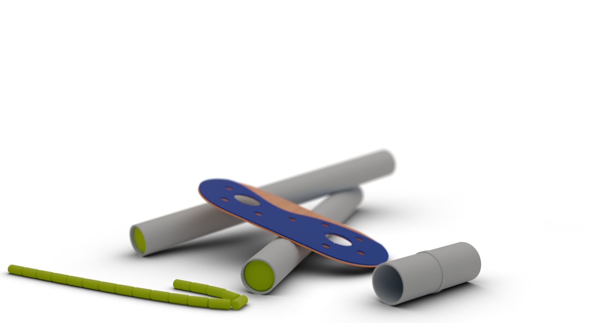
La traducción
A partir del entendimiento de cómo funciona el sistema de este conjunto de seres en simbiosis, se desarrolla la traducción de todo el sistema de construcción del juego; tres piezas que solo cobran sentido juntas.
Cargando
Cargando
Cargando
0%
01 / 04
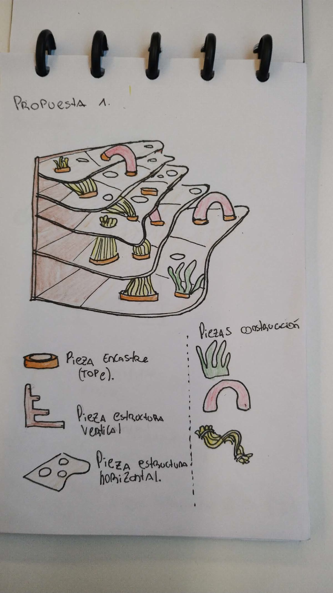
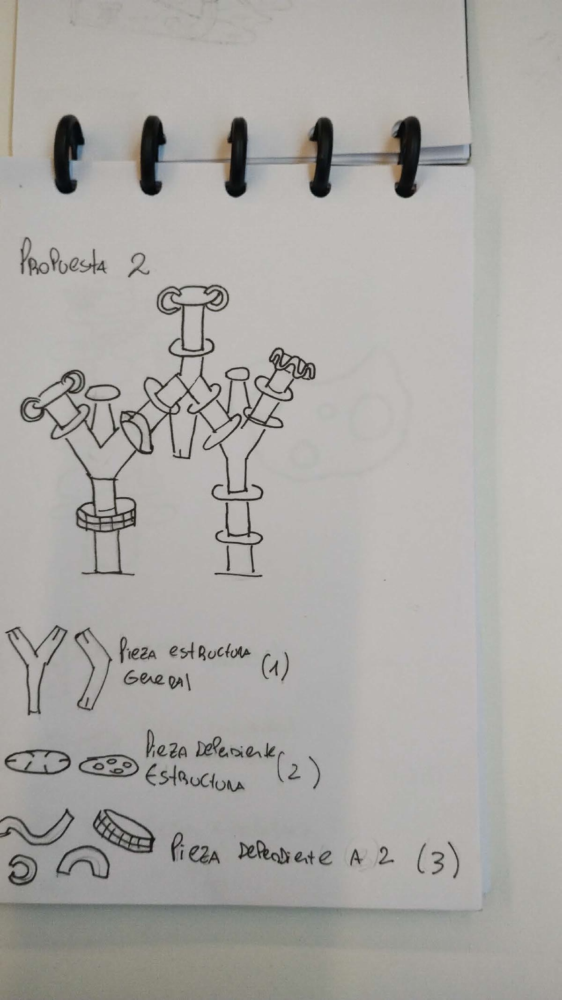
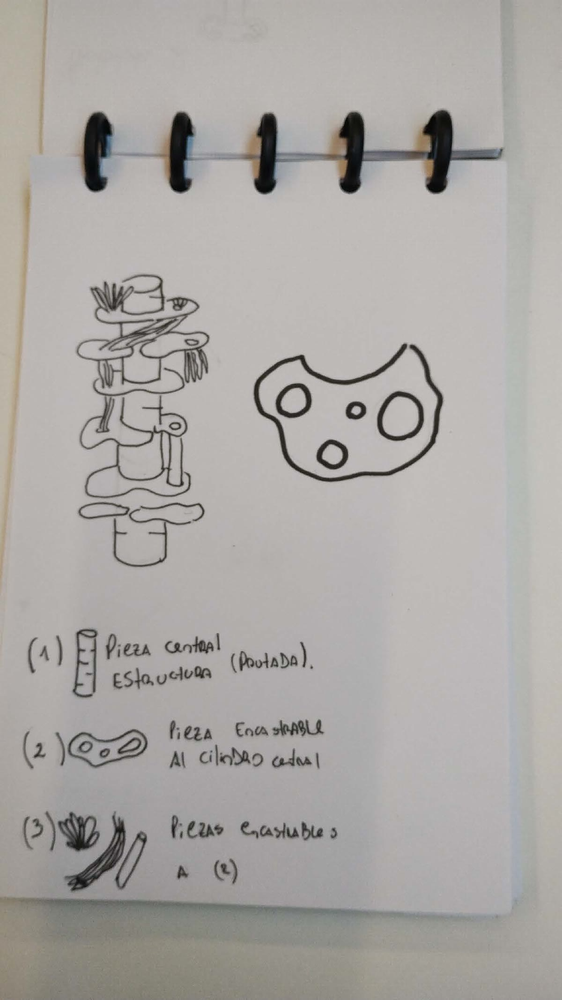
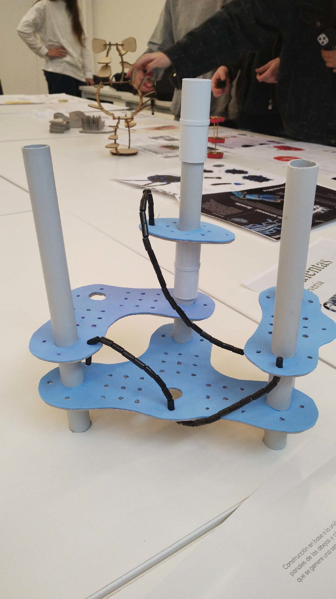
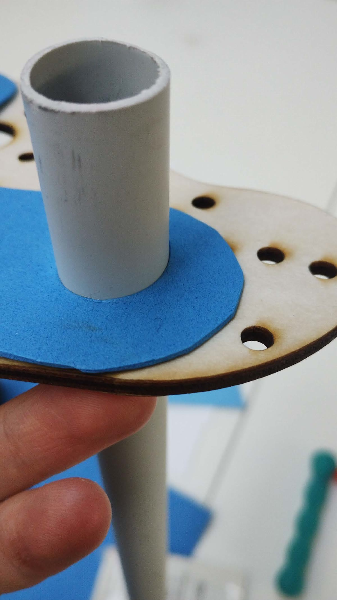
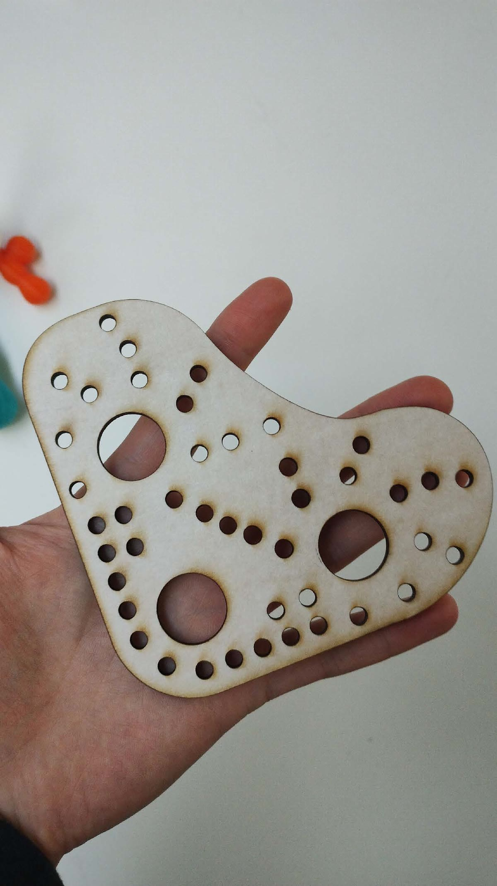
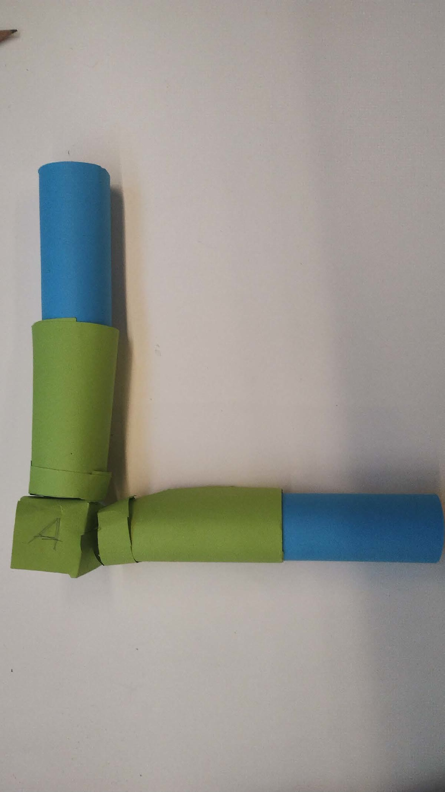
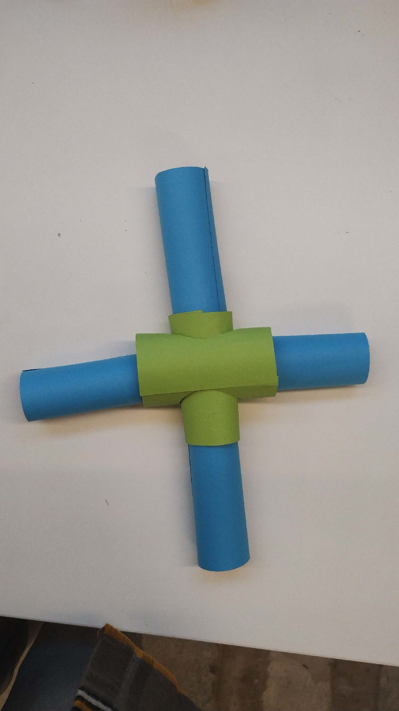
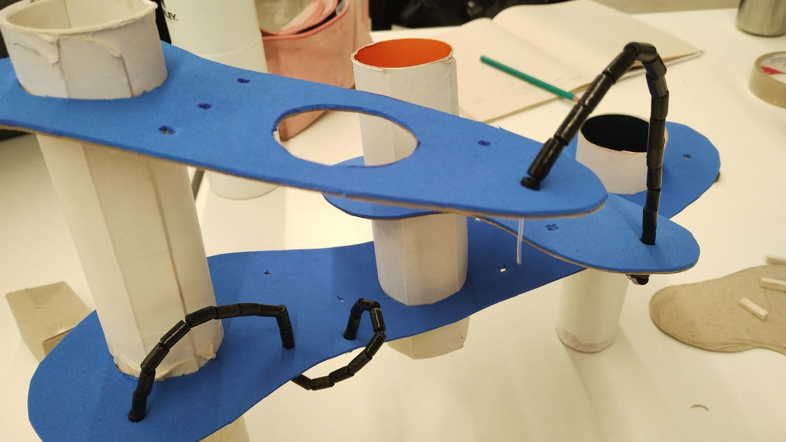
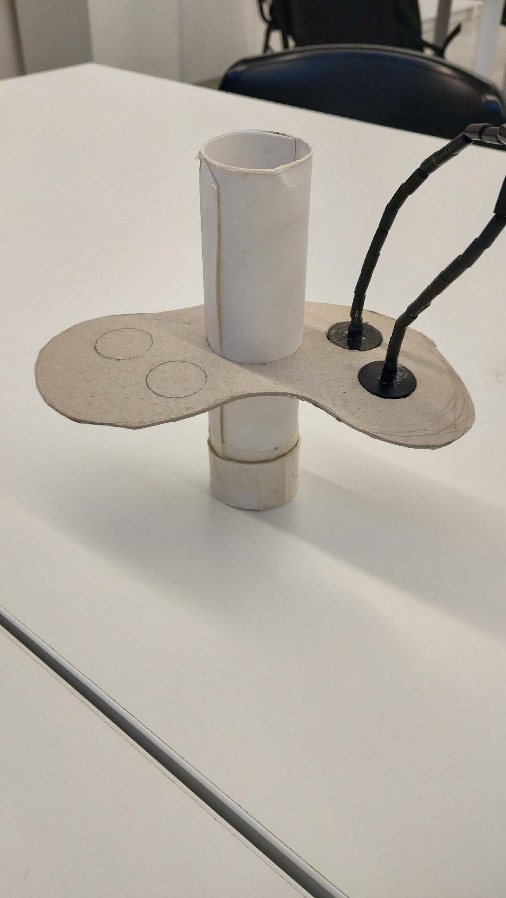
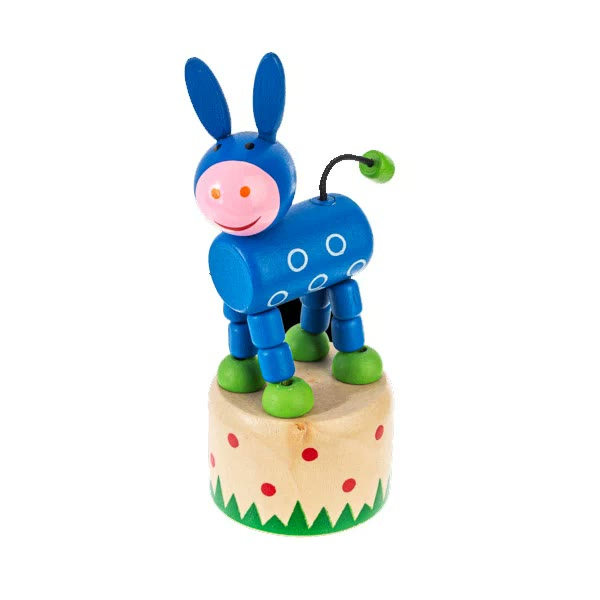
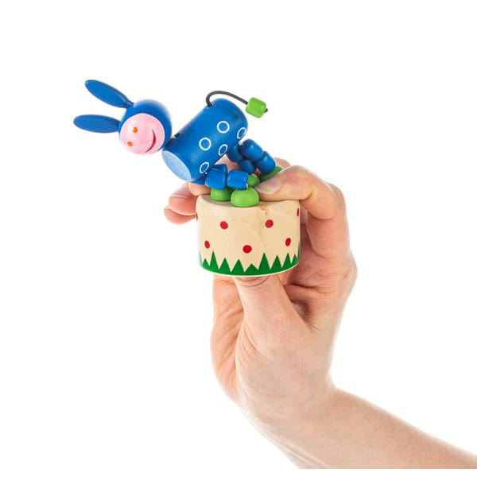
Gráfica e instructivos


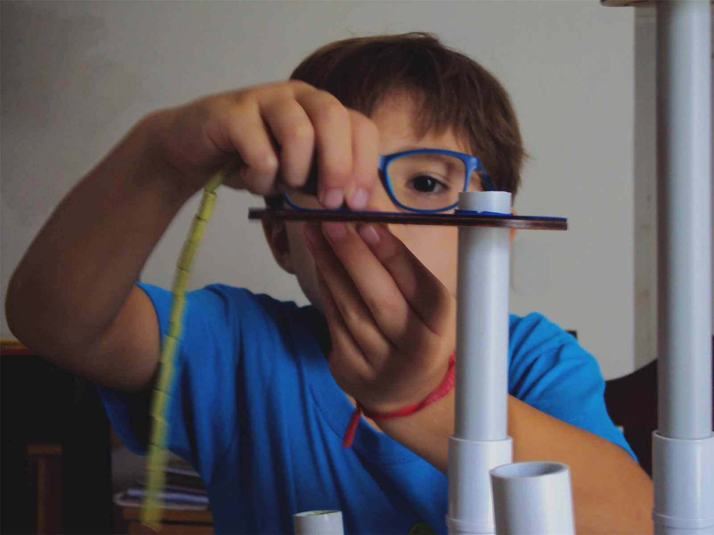
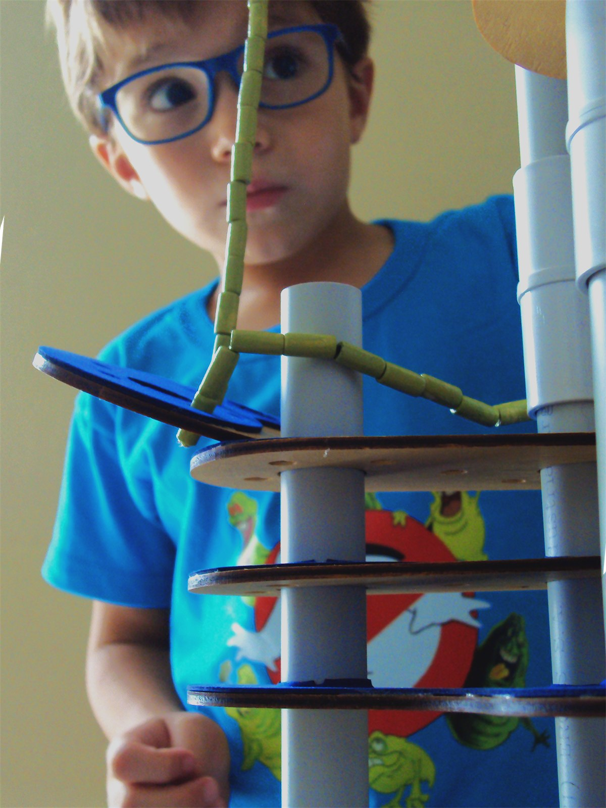
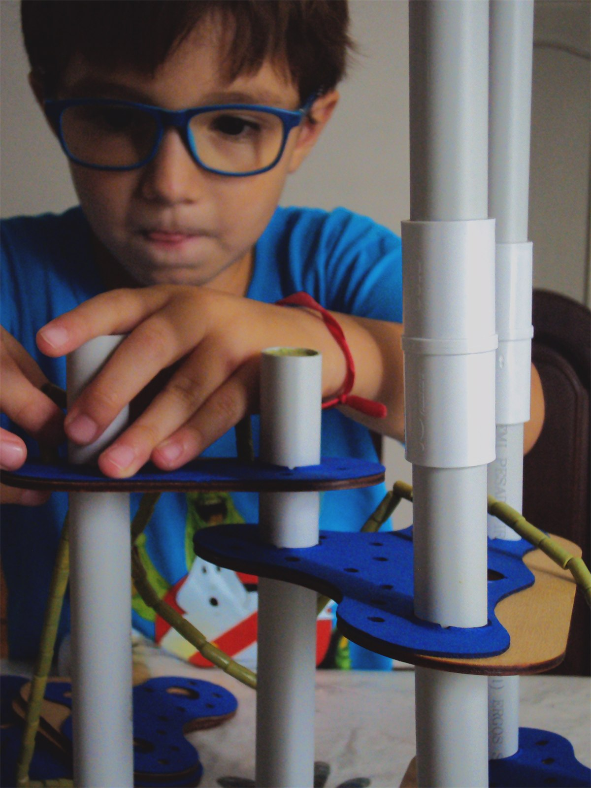
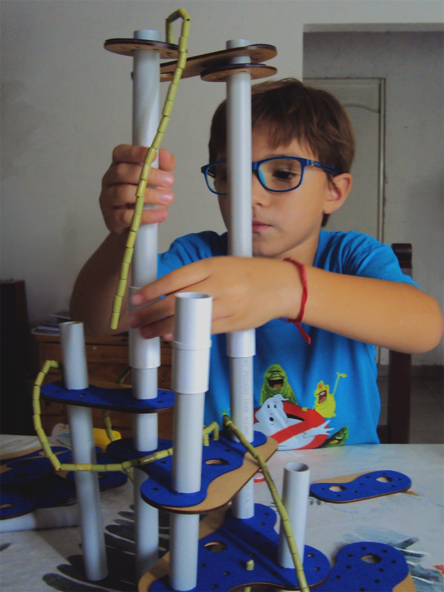